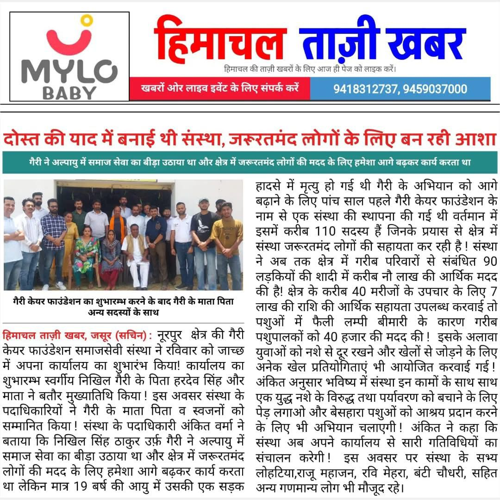
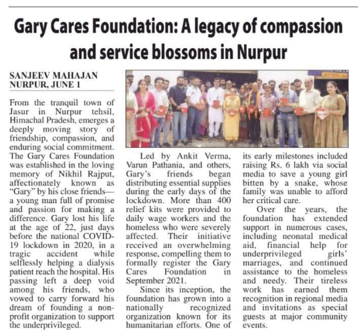
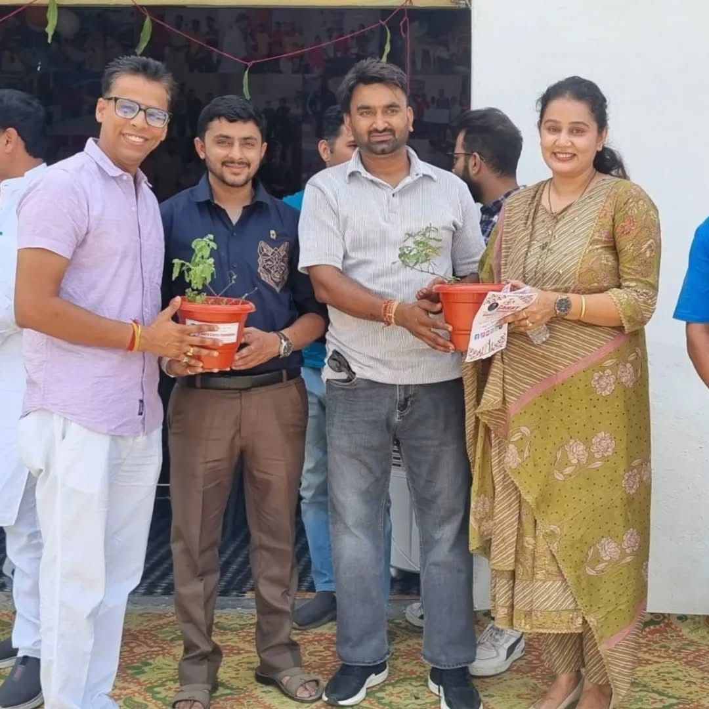
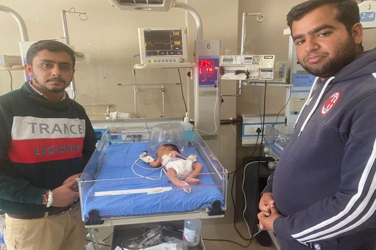
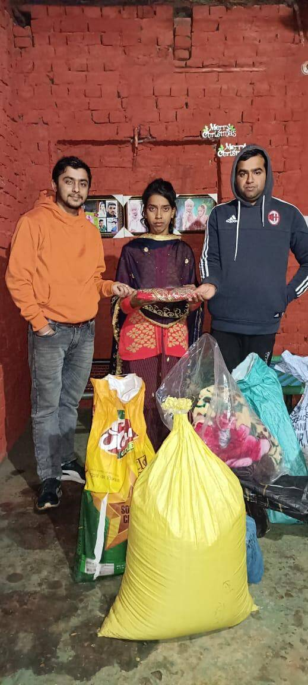
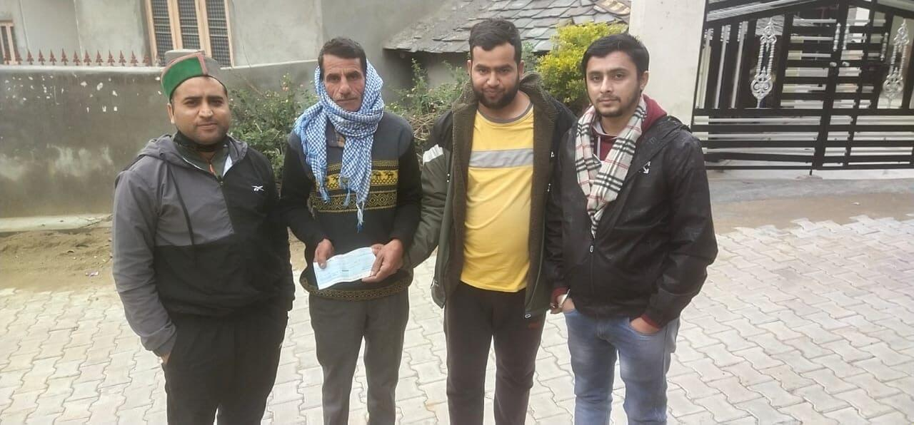
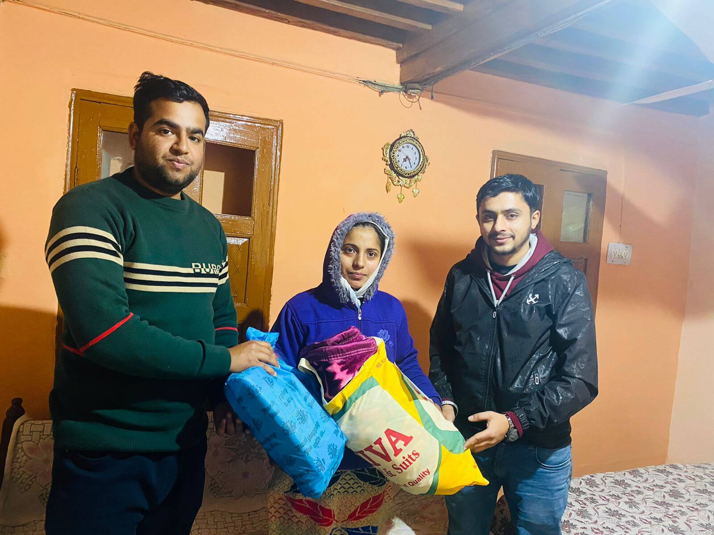

Coverage 01Community service recognized
Media coverage
Coverage and public mentions help more people discover the work of Garry Cares Foundation and build confidence among donors, volunteers and families seeking support.







Why coverage matters